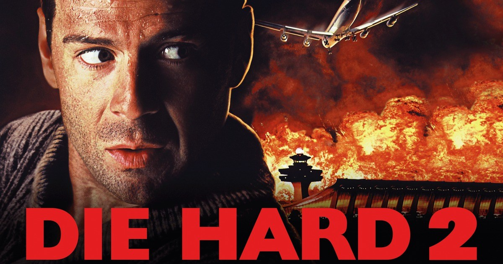
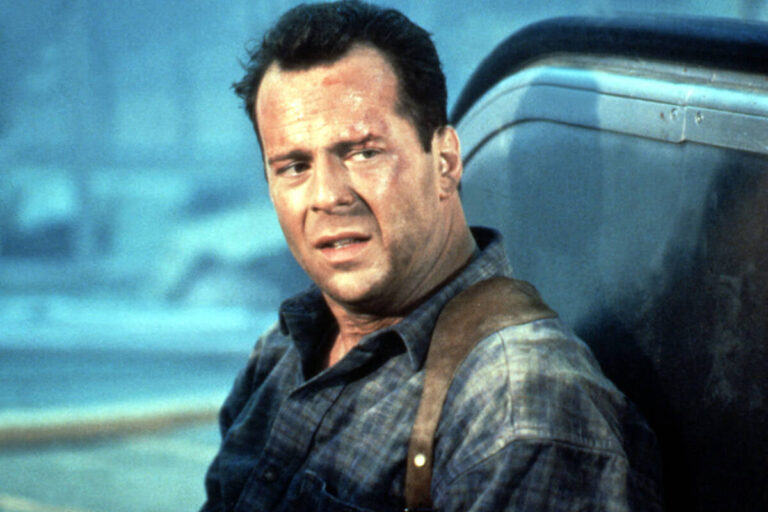
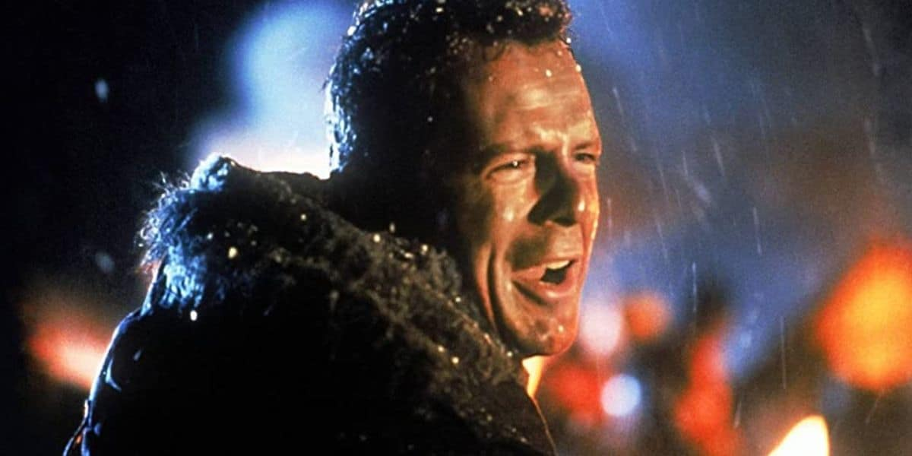

J'avais dix ans.
Mon grand-père venait tout juste d'acheter la cassette. Elle était encore dans son emballage d'origine. On l'a mise ensemble dans le lecteur ce soir-là.
C'était mon premier Bruce Willis. Mon premier Die Hard. Je ne savais pas encore qu'il existait un film avant.
58 minutes pour vivre.
Tout le monde vous dira que c'est le moins bon des deux. Que Harlin n'est pas McTiernan. Que l'aéroport ne vaut pas Nakatomi Plaza.
Tout le monde a tort.
Ce film n'a rien à envier à son prédécesseur. Il n'essaie pas de le copier — il construit son propre territoire. Une autre ambiance, une autre tension, un autre John McClane dans un autre enfer.
Ce soir, on remet la cassette de mon grand-père.

58 minutes pour vivre — affiche française, 1990
58 minutes pour vivre.
1990. Réalisé par Renny Harlin. Avec Bruce Willis, Bonnie Bedelia et William Sadler.
La suite de Die Hard — sorti deux ans plus tôt et devenu immédiatement l'un des films d'action les plus influents de sa décennie. Une suite que personne ne croyait possible sans perdre ce qui faisait l'original.
Renny Harlin relève le défi.
Pas en copiant McTiernan. En prenant le même personnage et en le plaçant dans un territoire radicalement différent — l'aéroport international de Dulles, la veille de Noël, sous une tempête de neige. Un lieu ouvert contre un lieu fermé. Le chaos extérieur contre le huis clos vertical.
Un film que la critique a expédié, que les fans ont classé en deuxième position par réflexe, et qui pourtant tient parfaitement la route trente-cinq ans après.
Certaines suites méritent mieux que l'ombre de leur prédécesseur.
Celle-là en fait partie.
1990.
Die Hard a tout changé. Sorti en 1988, le film de John McTiernan a redéfini le film d'action américain — un homme seul, un lieu fermé, une menace progressive, de l'humour au milieu de la violence. Chaque studio cherche son Die Hard. Chaque producteur veut sa franchise.
La Fox décide de faire une suite.
Le défi est immense. McTiernan ne revient pas. Le budget augmente. Les attentes du public sont démesurées. Et Bruce Willis — qui était encore une semi-inconnue télévisuelle avant le premier film — est désormais la star d'action la plus bankable d'Hollywood.
Renny Harlin prend les commandes. Réalisateur finlandais révélé par A Nightmare on Elm Street 4, il n'a pas encore la réputation qu'il construira avec Cliffhanger et The Long Kiss Goodnight. Mais il a quelque chose d'essentiel — une vision claire de ce que la suite doit être.
Pas une répétition. Une variation.
L'aéroport de Dulles comme nouveau territoire. La neige comme élément dramatique. Des terroristes qui contrôlent les instruments d'atterrissage plutôt qu'un immeuble. Et John McClane — toujours au mauvais endroit au mauvais moment — qui se retrouve seul à comprendre ce qui se passe quand personne ne veut l'écouter.
La formule est la même. Le décor est entièrement différent.
C'est exactement la bonne décision.

Bruce Willis — 58 minutes pour vivre, 1990
John McClane est à l'aéroport de Dulles.
La veille de Noël. Il attend sa femme Holly dont l'avion doit atterrir dans quelques heures. Une cigarette, un café, une soirée qui devrait être tranquille.
Elle ne l'est pas.
Un groupe de mercenaires prend le contrôle des systèmes de navigation de l'aéroport. Tous les avions en approche — dont celui de Holly — se retrouvent bloqués en altitude, tournant en rond au-dessus de Washington dans une tempête de neige, sans possibilité d'atterrir.
Chaque minute qui passe consume leur carburant.
McClane comprend ce qui se passe avant tout le monde. Et comme toujours, personne ne veut l'écouter. Les autorités de l'aéroport, la police, l'armée — chacun a sa procédure, son protocole, sa certitude que la situation est sous contrôle.
Elle ne l'est pas.
Ce qui distingue 58 minutes pour vivre du premier film c'est l'enjeu — pas un immeuble, pas des otages dans une salle. Des centaines d'avions en l'air, des milliers de passagers suspendus dans le vide, et une horloge qui tourne.
La tension est différente.
Ce film souffre d'une comparaison injuste.
Pas parce qu'il est meilleur que le premier Die Hard. Mais parce qu'il est jugé sur des critères qui ne sont pas les siens.
Die Hard est un film de huis clos. Sa perfection vient de l'unité de lieu — un immeuble, des étages, une géographie que le spectateur finit par connaître aussi bien que McClane. La tension est architecturale.
58 minutes pour vivre fait le choix inverse. L'aéroport est un lieu ouvert, labyrinthique, impossible à contrôler. Les couloirs de service, les pistes enneigées, les toits — Harlin construit un terrain de jeu radicalement différent et l'exploite avec une inventivité constante.
Et c'est là que le film révèle sa propre intelligence.
Harlin comprend que reproduire McTiernan serait une erreur fatale. Il ne cherche pas le même film. Il cherche la même sensation — l'homme seul contre une situation impossible — dans un contexte qui oblige à tout réinventer.
Le résultat est un film d'action parfaitement construit. Les séquences s'enchaînent avec une logique implacable. L'escalade est maîtrisée. Et Willis — plus à l'aise dans le rôle, plus confiant dans le personnage — apporte à McClane quelque chose de légèrement différent. Moins la surprise d'un homme ordinaire propulsé dans l'extraordinaire. Plus la lassitude d'un homme qui commence à accepter que c'est sa vie.
Ce n'est pas le même film que Die Hard.
C'est un bon film. Différent. Complémentaire.
Et ça suffit.

Dulles International — aéroport sous la neige, 58 minutes pour vivre
58 minutes pour vivre n'a pas été oublié au sens strict.
Il a été déclassé.
Dans la mémoire collective, il occupe une case précise — la suite honorable qui ne vaut pas l'original. Un film qu'on reconnaît, qu'on a vu, mais qu'on ne cite jamais en premier. Toujours derrière Die Hard dans les classements, toujours présenté comme la version inférieure, toujours jugé sur ce qu'il n'est pas plutôt que sur ce qu'il est.
La critique de 1990 a été mitigée. Pas hostile — mitigée. Ce qui est parfois pire. Une mauvaise critique génère de la curiosité. Une critique tiède génère de l'indifférence.
Et Die Hard with a Vengeance en 1995 n'a pas arrangé les choses. En plaçant le troisième volet au même niveau que le premier dans l'estime des fans, il a définitivement relégué le deuxième dans un entre-deux inconfortable — trop connu pour être redécouvert, pas assez célébré pour être défendu.
Renny Harlin a payé le prix de cette hiérarchie.
Pourtant le film existe. Il tourne. Il fonctionne. Et pour ceux qui l'ont découvert avant le premier — comme moi, à dix ans, devant la cassette de mon grand-père — il n'a jamais eu de prédécesseur à surpasser.
Il était juste un grand film d'action.
Il l'est toujours.
Parce que la hiérarchie des suites est une prison.
Dès qu'un film est étiqueté comme inférieur à son prédécesseur, il cesse d'être regardé pour ce qu'il est. On le voit à travers le prisme de l'original — ses différences deviennent des manques, ses choix deviennent des erreurs, sa personnalité propre devient une trahison.
58 minutes pour vivre mérite d'être regardé autrement.
Seul. Sans Die Hard à côté. Comme un film d'action de 1990 qui prend un lieu improbable — un aéroport sous la neige — et en fait un terrain de tension parfaitement exploité. Qui prend un personnage déjà établi et lui trouve un nouvel angle. Qui construit une menace originale et la résout avec une inventivité constante.
Renny Harlin mérite aussi d'être réévalué. Sa mise en scène dans ce film est précise, efficace, avec un sens du rythme et de l'escalade qui n'a rien à envier aux grands films d'action de l'époque.
Et Willis — au sommet de sa popularité en 1990 — est parfait dans ce registre. McClane est devenu son personnage. On le sent habiter le rôle avec une aisance que le premier film, dans sa découverte, ne pouvait pas avoir.
J'avais dix ans quand j'ai mis cette cassette dans le lecteur de mon grand-père.
Je ne savais pas que c'était une suite.
Je savais juste que c'était un grand film.
58 minutes pour vivre n'est pas Die Hard.
Il ne cherche pas à l'être.
Il est son propre film — avec son propre territoire, sa propre ambiance, sa propre façon de faire vivre John McClane dans un enfer différent. Renny Harlin a fait le bon choix en refusant la copie et en construisant quelque chose de complémentaire.
Tout le monde vous dira que le premier est meilleur.
Peut-être.
Mais moi je l'ai découvert dans l'autre sens. Sans comparaison possible. Devant la cassette de mon grand-père, à dix ans, sans savoir qu'il existait un film avant.
Et ce film m'a suffi.
Il me suffit toujours.
La cassette est dans le lecteur. On rembobine.
Titre français
58 minutes pour vivre
Titre original
Die Hard 2
Pays
États-Unis
Genre
Action / Thriller
Durée
124 min
Producteur
20th Century Fox
Avec aussi
William Sadler · John Amos · Dennis Franz
Fil conducteur
Saison Spéciale — La suite avant le début
Regarder l'épisode
SOMEDAY — SPÉCIAL EP. 01